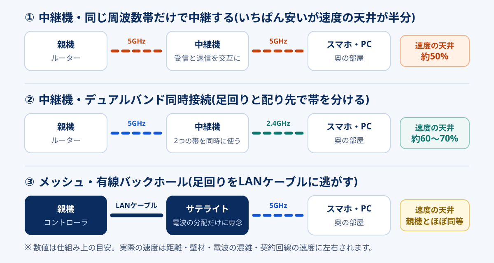

「寝室だけWi-Fiが弱い」「2階に上がると動画が止まる」。この悩みの解決策として出てくるのがWi-Fi中継機とメッシュWi-Fiの2つです。値段は数千円から3万円台まで開きがあり、どちらを買うべきか迷いやすいところです。
ただ、この2つを比べる前に確認すべきことがあります。そもそも、その症状は機器を足して直る種類のものなのか。ここを飛ばして買うと、1万円以上かけて何も変わらないという結果になりかねません。この記事では、原因の切り分けから始めて、中継機とメッシュの仕組みの違い、構成ごとの速度の天井、間取り別の選び方まで順番に整理します。
中継機とメッシュの本当の差は「シームレスに繋ぎ変わるかどうか」ではなく、親機までの足回り(バックホール)をどう確保する設計かです。そのうえで選び方は単純で、困っている部屋が1つなら中継機、家じゅう・移動しながら使うならメッシュ。ただし親機のすぐ横でも遅い/夜だけ遅い場合は、どちらを買っても改善しません。まず原因を切り分けてください。
回線側が原因だったなら:GMOとくとくBB光の料金を見る公式サイトへ →PR・相談や申し込みの前に、料金と条件は公式サイトでご確認ください


「届かない」の原因は4つ。機器で直るのは2つだけ
Wi-Fiが弱い・遅いという症状は、原因が大きく4種類に分かれます。中継機やメッシュを足して効くのは、このうち上の2つだけです。
| 原因 | 症状の出方 | 機器の追加で直るか | 本来の対処 |
|---|---|---|---|
| ① 距離・遮蔽 | 特定の部屋・階だけ弱い。親機の近くは問題ない | 直る | 中継機・メッシュの追加、親機の置き場所の見直し |
| ② 親機の性能・世代 | 家全体でなんとなく遅い。接続台数が多いと不安定 | 直る | ルーターの買い替え。メッシュ導入は買い替えを兼ねられる |
| ③ 電波の混雑 | 夜だけ遅い。集合住宅で顕著。2.4GHzが特に不安定 | ほぼ直らない | 5GHz・6GHzへの移動、チャンネル変更、有線化 |
| ④ 回線側の上限 | 親機のすぐ横でも遅い。有線でも遅い。夜に激しく落ちる | 直らない | IPoE化・プラン変更・回線の乗り換え |
検索して出てくる「中継機とメッシュ、どっちがおすすめ?」という記事の多くは、①と②であることを暗黙の前提にしています。しかし、実際に相談を受けていて多いのは③と④が混ざっているケースです。とくに集合住宅で夜だけ遅くなる症状は、VDSL配線の上限やIPv6 IPoE未対応が理由のことがあり、そこに中継機を足しても体感は変わりません。
- ルーターのすぐ横でも期待より遅い
- パソコンをLANケーブルで直結しても遅い
- 夜21時〜23時台だけ極端に落ち、昼間は速い
いずれも原因は家の中の電波ではなく、回線かプロバイダ側にあります。機器を増やしても、配る元が細いままでは太くなりません。
買う前にやる5分の切り分け
やることは「同じ測り方で、場所と時間を変えて4回測る」だけです。スマホの速度測定アプリでもブラウザの測定サイトでも構いませんが、途中で変えずに同じもので統一してください。
-
親機から1〜2mの場所で測る
まずは基準づくり。ここで契約速度に対して極端に低ければ、家の中の電波の問題ではありません。1ギガ契約の無線で下り200〜400Mbps出ていれば、親機まわりは健全と見ていい水準です。
-
困っている部屋で測る
基準の数値と比べます。基準の3割を切っているなら距離・遮蔽が効いており、中継機やメッシュで改善が見込めます。逆に基準とほぼ同じなのに遅いと感じるなら、原因は電波ではありません。
-
時間帯を変えてもう一度測る
平日の昼と、夜21時〜23時台の2回。夜だけ大きく落ちるなら混雑か回線側です。この差が5倍以上になる場合は、機器より先に回線の見直しを検討したほうが早いです。
-
LANケーブルで直結して測る
パソコンやゲーム機をルーターのLANポートに直結します。有線でも遅ければ確定で回線側。有線は速いのに無線が遅いなら、無線側の問題なので機器の追加が効きます。
-
結果を4分類に当てはめる
「親機の横は速い・奥の部屋が遅い・時間帯で変わらない・有線は速い」なら①距離と遮蔽で、中継機かメッシュの出番。「どこでも遅い・有線でも遅い」なら④回線側です。
親機を床置き・テレビ裏・金属ラックの中・水槽や電子レンジのそばから出すだけで、奥の部屋の数値が変わることがあります。電波は水と金属に弱く、下向きには広がりにくい性質があるためです。家の中央寄り・床から1m以上・周囲に遮蔽物なしに置き直してから測ると、そもそも機器の追加が要らなかったと分かる場合もあります。
中継機とメッシュの違いを仕組みで理解する
カタログでは「メッシュはシームレスに繋ぎ変わる」「中継機は安い」という説明が並びますが、体感の差を決めているのはもっと手前の設計思想です。
| 観点 | Wi-Fi中継機 | メッシュWi-Fi |
|---|---|---|
| 役割 | 今ある親機の電波を、その場で受けて撒き直す | 親機とサテライトで1つのネットワークを組み直す |
| SSID(電波の名前) | 機種により別名になることがある(手動で切り替えが必要) | 全台で同じ。端末が自動で強いほうへ移る |
| 接続先の切り替え | 端末任せ。弱い電波を掴んだままになりやすい | ネットワーク側から誘導するため居座りにくい |
| 親機までの足回り | 通常は1経路。同じ帯で中継すると速度が半減する | 専用帯や有線に逃がす設計が用意されている |
| 台数を増やしたとき | 中継機の先にさらに中継すると劣化が重なる | 経路を選び直せるため劣化しにくい |
| 費用の目安 | 3,000〜8,000円前後 | 2台セットで1.5万〜3.5万円前後 |
| 今の親機 | そのまま使える | 基本は置き換え(ブリッジ併用も可) |
※ 2026年9月時点の一般的な家庭向け製品の目安です。機種により例外があります。
この表で一番効いてくるのは「親機までの足回り」の行です。中継機もメッシュのサテライトも、やっていることは「親機から受け取った通信を、手元の端末に渡す」という同じ仲介作業。違うのは、その仲介にどれだけ専用の道を用意しているかです。この親機との通信路をバックホールと呼びます。

安価な中継機は、親機から受け取るのも端末に渡すのも同じ5GHzで行います。無線は同じ周波数で送信と受信を同時にはできないため、交互に処理することになり、理論値がおよそ半分に落ちます。これが「中継機は遅くなる」と言われる正体です。逆に言えば、親機側と端末側で帯を分けられる機種を選べば、この半減はかなり避けられます。
構成別・速度の天井を逆算する
ここが、この記事で一番お伝えしたい部分です。中継機かメッシュかという二択ではなく、「バックホールをどう確保したか」で天井が決まるという見方をすると、製品選びが一気に楽になります。親機のすぐ横で出る速度を100としたときの、奥の部屋での目安が次の表です。
| 構成 | バックホール | 天井の目安 | 向いている使い方 |
|---|---|---|---|
| 中継機(シングルバンド中継) | 端末と同じ帯を共有 | 約50% | スマホでSNS・音楽。動画は標準画質まで |
| 中継機(デュアルバンド同時接続) | 親機側5GHz・端末側2.4GHz などで分離 | 約60〜70% | 1部屋の動画視聴・ブラウジング |
| メッシュ(無線バックホール・2バンド) | 端末と一部共用 | 約50〜70% | 家じゅうの常用。4K視聴は配置次第 |
| メッシュ(無線バックホール・トライバンド) | 専用の1帯を確保 | 約70〜85% | 4K視聴・オンライン会議・複数人同時 |
| メッシュ(有線バックホール) | LANケーブル | 親機とほぼ同等 | オンラインゲーム・10ギガ契約・在宅勤務 |
※ 仕組みから導いた目安で、保証値ではありません。実際は距離・壁材・チャンネルの混雑・契約回線の速度に左右されます。
読み取ってほしいのは2点です。ひとつは、いちばん安い中継機を買うと、その時点で天井が半分に決まるということ。元が300Mbps出ている家なら150Mbpsで、動画も会議も十分実用的です。しかし元が80Mbpsしか出ていない家で半減させると40Mbpsになり、家族が同時に使った瞬間に苦しくなります。今いくら出ているかによって、同じ製品の評価が変わります。
もうひとつは、3万円のトライバンドメッシュを無線で置くより、1.5万円の2台セットをLANケーブルで繋ぐほうが速いことが多いという逆転です。バックホールを有線に逃がせるなら、そちらに予算を寄せたほうが結果が出ます。オンラインゲームでのPingを気にする人や、10ギガ契約にしている人は、この差が体感にはっきり出ます。
間取りと症状から選ぶ判定表
切り分けの結果が①距離・遮蔽、または②親機の性能だった人向けの判定です。予算は2026年9月時点の一般的な市場価格の目安です。
| あなたの状況 | おすすめの構成 | 予算の目安 | 注意点 |
|---|---|---|---|
| 1LDK・2DKで、困っているのは1部屋だけ | デュアルバンド同時接続の中継機1台 | 4,000〜8,000円 | 親機と困っている部屋の中間、かつ親機の電波が十分届く位置に置く |
| 3LDK以上の平屋・マンションで家じゅう不安定 | メッシュ2台セット(無線バックホール) | 1.5万〜2.5万円 | 親機を置き換えるので、レンタル機はブリッジ設定にする |
| 2階建て・3階建ての戸建て | メッシュ2〜3台。可能なら有線バックホール | 2万〜3.5万円 | 階をまたぐ電波は減衰が大きい。階段まわりに置くと通りやすい |
| 家の中を移動しながら通話・会議をする | メッシュ(中継機は不向き) | 1.5万〜3万円 | 切り替え時の途切れが問題になる用途はメッシュ一択に近い |
| 各部屋にLANポートがある(情報分電盤つき) | メッシュ+有線バックホール | 1.5万〜2.5万円 | この環境なら、高価な無線機能に課金するより配線を使うほうが速い |
| ルーターが5年以上前のもの | まずルーター本体の買い替え | 8,000〜2万円 | 中継機を足す前に、親機を替えるだけで解決する場合がある |
ルーター本体の買い替えから検討する場合は、規格(Wi-Fi 6/6E/7)より先に見るべき点を光回線ルーターの選び方にまとめています。レンタルルーターを使っている人は、そちらとの併用の作法も同じ記事で触れています。
有線バックホールの作り方(現実解)
「LANケーブルで繋げば速い」のは分かっていても、壁に穴は開けられないし、部屋をまたいでケーブルを這わせるのは現実的でない、という家が多いはずです。持ち家・賃貸それぞれで取れる手を、効果の大きい順に並べます。
| 方法 | 効果 | 費用の目安 | 向いている家 |
|---|---|---|---|
| 各部屋のLANポートを使う | 最大 | ケーブル代のみ(数百円〜) | 情報分電盤・マルチメディアコンセントのある新しめの物件 |
| フラットLANケーブルを床・ドア下に這わす | 最大 | 1,000〜3,000円 | 隣室まで数mで済む間取り。ドアの隙間を通せる薄型の製品を選ぶ |
| モール(配線カバー)で壁ぎわを回す | 最大 | 3,000〜6,000円 | 賃貸でも原状回復しやすい。跡が残りにくい固定方法の製品を選ぶ |
| PLCアダプター(電力線を使う) | 中(数十〜200Mbps程度) | 1万〜1.6万円 | 階をまたぐ・配線できない家。同一ブレーカー内でないと効きにくい |
PLCは「有線と同じ速度が出る」ものではありません。分電盤の構成や同時に使っている家電の影響を受けやすく、期待値は無線バックホールと同程度〜やや上、という位置づけで見てください。それでも、鉄筋の壁や階をまたいで電波がまったく通らない家では、無線で頑張るより安定することがあります。
- ケーブルはカテゴリ6A以上を選ぶ(1ギガなら5eでも足りるが、将来の10ギガを見越すなら6A)
- 親機側・サテライト側とも、LANポートの速度表記を確認する(1台だけ100Mbps止まりの機種があると、そこが天井になる)
- サテライトを有線で繋いだら、管理アプリで「有線接続」と表示されているかを確認する
- 電源タップを経由するPLCは効きが落ちる。壁のコンセントに直挿しする
- 賃貸は壁への穴あけ・造作を伴う配線は事前に確認する。床を這わせる・モールで回す程度なら原状回復しやすい
買う前に確認する5項目
製品ページの数字より、この5つのほうが後悔の有無に直結します。
1. 中継機は「デュアルバンド同時接続」対応か
前述のとおり、ここで天井が決まります。製品ページに「親機との通信と子機との通信を別の帯域で同時に行う」旨の記載があるかを確認してください。記載がない安価なモデルは、同一帯で中継する前提と考えたほうが安全です。
2. メッシュは同一メーカー・同一シリーズで揃えるのが基本
Wi-Fi Allianceの共通規格Wi-Fi EasyMeshに両方が対応していれば、メーカーをまたいで組める場合があります。ただし、メーカー独自のメッシュ機能とは互換性がなく、同じメーカーでも機種によって対応・非対応が分かれます。買い足しの可能性があるなら、EasyMesh対応を選んでおくと選択肢が残ります。
3. IPv6(IPoE)をそのまま通せるか
メッシュ機に置き換えた途端に夜が遅くなった、という失敗の典型が、IPv6の設定が引き継がれていないパターンです。IPv6 IPoEを使っている家では、メッシュ機側の対応方式(IPoE対応/IPv6パススルー)を必ず確認してください。
4. レンタルルーターとの併用形態を決める
光回線の事業者からルーター機能つき機器を借りている場合、メッシュ機はブリッジ(アクセスポイント)モードで使うのが基本です。両方でルーター機能を有効にすると、二重ルーター状態になり、オンラインゲームやVPNで不具合が出ることがあります。
5. 設置台数と電源の位置を先に決める
メッシュのサテライトは、親機の電波が「十分届く場所」に置かないと意味がありません。奥に置きすぎると足回りが細くなり、置く意味が薄れます。目安は親機とデッドゾーンのちょうど中間、かつ親機の電波が2〜3本立つ位置。その場所にコンセントがあるか、買う前に見ておいてください。
中継機を数珠つなぎにすると、区間ごとに速度の天井が掛け算で落ちていきます。50%×50%で25%まで下がる計算です。2台以上が必要な広さなら、最初からメッシュを選ぶほうが結果的に安上がりになります。
足しても直らないときは回線側を疑う
切り分けで④に当てはまった場合、打てる手は家の中ではなく契約側にあります。優先順位は次のとおりです。
- IPv6 IPoEに変えられないか確認する:夜だけ遅い症状の定番の対処です。プロバイダによっては申し込みだけで切り替わり、対応ルーターも必要になります。詳しくはIPv6 IPoEの解説へ。
- 集合住宅の配線方式を確認する:VDSL方式なら理論上の上限が100Mbps前後で、無線をいくら強化しても超えられません。確認方法はマンションのネットが遅い原因とVDSLの改善策にまとめています。
- 回線そのものを乗り換える:上の2つで打つ手がない場合の最終手段です。在宅勤務で困っているならテレワーク向けの回線要件、オンライン会議が主戦場ならWeb会議が切れるときの対処も合わせて確認してください。
原因が「無線ではなく回線」だと分かったときに、いちばん判断しやすいのは契約期間の縛りがない回線です。改善しなければまた変えればいい、という状態にしておくと、試すこと自体のコストが下がります。
契約期間の縛りと解約違約金がない光コラボなら、乗り換えて改善しなかったときの損失を抑えられます。プロバイダ一体型でIPv6 IPoEに標準対応しており、対応ルーターのレンタルもあります。
GMOとくとくBB光の料金を見る縛りなし・IPv6 IPoE標準対応※ 料金・キャンペーンの条件は時期により変わります。申し込み前に公式サイトでご確認ください。回線全体の比較は光回線7社比較にまとめています。
よくある質問
中継機とメッシュ、結局どちらを買えばいいですか?
中継機を置くと速度が半分になると聞きました。本当ですか?
メーカーが違う機器でメッシュを組めますか?
今のルーターを親機のまま、メッシュを足せますか?
Wi-Fi 7のメッシュにすれば、家の隅まで届きますか?
ホームルーターやポケット型WiFiでも中継機は使えますか?
まとめ:買う順番を間違えなければ、失敗しにくい
- まず5分の切り分け。親機の横・奥の部屋・時間帯・有線の4回測る
- 原因が③混雑・④回線側なら、中継機もメッシュも効かない
- 中継機とメッシュの差はバックホールの確保のしかた。天井はここで決まる
- 安い中継機は天井が約50%。今の速度が細い家ほど不利になる
- 有線バックホールが組めるなら、そこに予算を寄せるのがいちばん効く
- 2台以上必要な広さなら、中継機の数珠つなぎではなく最初からメッシュ
ルーター本体から見直す場合は光回線ルーターの選び方、そもそも回線が遅い可能性を潰したい場合は光回線が遅いときの原因と対処が次の一歩になります。
- バッファロー「メッシュWi-Fiとは?」「Wi-Fi EasyMesh」「中継機を選ぶポイントはデュアルバンド同時接続」(2026年9月確認) — 中継時の帯域共有と半減、EasyMeshの互換性、有線バックホールの扱い
- NEC Aterm サポート「中継機使用時に速度が出ない・通信が安定しない」(2026年9月確認) — 中継機の設置位置と速度低下の要因
- 各メーカーのメッシュ対応機種一覧および製品仕様ページ(2026年9月確認) — 有線バックホール対応、トライバンド構成の有無
- 価格は2026年9月時点の一般的な市場価格の目安です。実売価格は時期・販売店により変動します